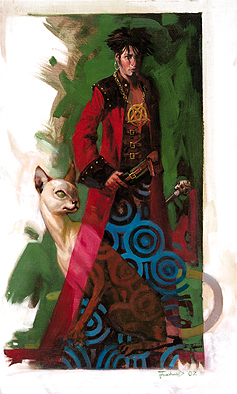

“冷酷的魔鬼，地狱的主人，阿斯摩蒂而斯大人，我呼唤您的名字，为我开启禁断的秘密！”
－吉利亚德・蒂罗森

阿斯摩蒂而斯的信徒通常是领主或是族主，为了追求无限的权利而敬拜九层地狱的主人，对敢于挡路的家伙一概轰杀。他们运用自己的权势和影响研习着禁断的知识，又用这些知识增强着自己的势力，提高操纵子民的技巧，以及自身的力量。
施法者（神术或奥术）通常是阿斯摩蒂而斯信徒的最佳人选。
阿斯摩蒂而斯的信徒通常在文明社会中结成秘密组织，他们的首领有些死板僵硬，属下则为了权欲拼到你死我活。阿斯摩蒂而斯的信徒总是在追求统治世界，而为了奖励他们对主子的忠诚，地狱的主人也时常会赏赐些低阶魔鬼或是不死生物作为他们的仆从。
生命骰：d6
需求：想要成为一名阿斯摩蒂而斯的信徒，角色必须满足以下条件：
阵营：守序邪恶或者中立邪恶
技能：唬骗4级，交涉5级，观言察色4级
专长：黑暗信徒，邪恶烙印，领导
特殊：想要正式成为一名阿斯摩蒂而斯的信徒，角色必须进行一种可怕的仪式，包括在祭坛上活活杀死一名智慧生物。祭品必须拥有皇家血统或是在政坛上拥有相当地位。
本职技能：唬骗（魅力），专注（体制），解读文书（智力），交涉（魅力），收集情报（魅力），躲藏（敏捷），暗语沟通（感知），威吓（魅力），知识（全部）（智力），探知（智力），搜索（智力），观言察色（感知），法术辨识（智力），侦察（感知）。
每等级技能点数：4+智力调整值
表5-4 阿斯摩蒂而斯的信徒
等级 基础攻击加值 坚韧豁免 反射豁免 意志豁免 特殊 魔法
1 +0 +0 +0 +2 媚惑／禁断知识 施法者等级+1
2 +1 +0 +0 +3 命令术 �D�D
3 +2 +1 +1 +3 禁断知识2次每周 施法者等级+1
4 +3 +1 +1 +4 召唤地狱猫 �D�D
5 +3 +1 +1 +4 禁断知识3次每周 施法者等级+1
6 +4 +2 +2 +5 邪恶威仪 �D�D
7 +5 +2 +2 +5 禁断知识4次每周 施法者等级+1
8 +6 +2 +2 +6 召唤高等魔鬼 �D�D
9 +6 +3 +3 +6 高等命令术／禁断知识1次每日 施法者等级+1
10 +7 +3 +3 +7 恐怖之力 施法者等级+1
职业特性：
擅长武器及防具：阿斯摩蒂而斯的信徒不擅长任何武器，防具以及盔甲。
额外专长或魔法：当阿斯摩蒂而斯的信徒达到1级，3级，5级，7级，9级以及10级时，每日法术数量会增加，就像之前的施法职业一样，但不能获得之前施法职业等级的其它能力（如：增进驱散或斥喝不死生物能力、超魔或制造物品专长等）。阿斯摩蒂而斯的信徒等级加上所具备的其它施法职业等级，决定其每日法术数量、可知法术与施法者等级。举例而言，8级巫师乌珥撒克进阶阿斯摩蒂而斯的信徒1级，则他获得新法术的数量如同9级巫师，但在攻击加值与豁免加值等其它特性则沿用阿斯摩蒂而斯信徒的升级规定。若他下次升级时选择将巫师升级，即成为9级巫师／1级阿斯摩蒂而斯的信徒，他获得的法术数量与施法者等级如同10级巫师。
若人物在成为阿斯摩蒂而斯的信徒之前拥有多个施法职业，则必须选择要将此升级的阿斯摩蒂而斯的信徒等级加在哪一种施法职业上，以决定新的每日法术数量。
媚惑（SP）：每日一次，阿斯摩蒂而斯的信徒可以施展如同法术“媚惑”的能力，施法者等级等同于角色的有效施法者等级。
禁断知识（EX）：通过欺骗，谎言甚至是威胁，阿斯摩蒂而斯的信徒可以得到一般人无法获取的知识。在1级时，阿斯摩蒂而斯的信徒可以每周1次在进行收集信息检定时得到+10的奖励。之后每提高2等级，角色可以每周多使用一次本能力（3级时2次，5级时3次），当阿斯摩蒂而斯的信徒达到9级时，可以每日一次使用禁断知识。
命令术（SP）：每日一次，阿斯摩蒂而斯2级以上的信徒可以施展如同法术“命令术”的能力，施法者等级等同于角色的有效施法者等级。
召唤地狱猫（SP）：每日一次，阿斯摩蒂而斯4级以上的信徒可以召唤一只地狱猫。如同施展“召唤怪物术”，施法者等级等同于角色的有效施法者等级。当阿斯摩蒂而斯的信徒最终达到9级时，每日可以召唤1d4只地狱猫。
邪恶威仪（SP）：每日一次，依照阿斯摩蒂而斯6级以上信徒的意志，所有50尺内属于邪恶阵营，并且生命骰数低于角色的生物必须进行意志检定（DC 10+阿斯摩蒂而斯信徒的等级+角色的魅力调整值），失败者尊阿斯摩蒂而斯的信徒为自己的主人。受影响的生物不会攻击阿斯摩蒂而斯的信徒，并在未来24小时那遵照他的意愿行动，效果如同集体暗示术。
召唤高级魔鬼（SP）：每周一次，阿斯摩蒂而斯8级以上的信徒可以施展如同法术“高级异界誓盟”的能力来召唤一名魔鬼，请求他的帮助。
高等命令术（SP）：每日一次，阿斯摩蒂而斯9级以上的信徒可以施展如同法术“高等命令术”的能力，施法者等级等同于角色的有效施法者等级。
恐怖之力（EX）：角色吸取一部分阿斯摩蒂而斯的力量，在防护等级，豁免检定，以及攻击检定上永久获得+2的奖励。